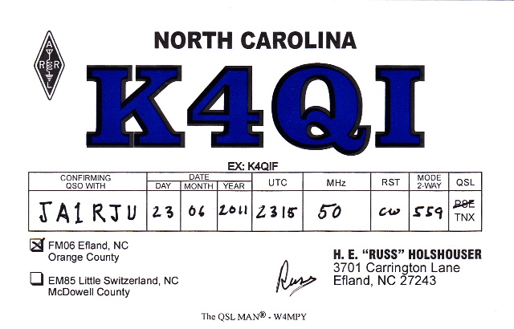
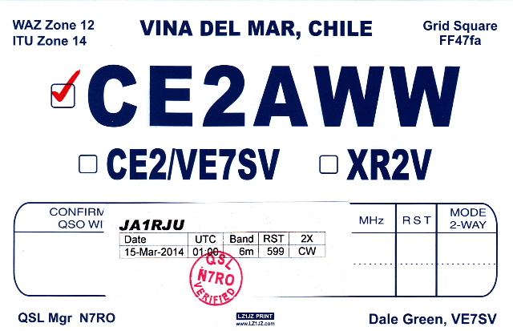

Flash ! DX


 
 |
|
|
|

 |
|
|
[Back Issues Jul.2014]
TIME:UTC(JST-09:00)
Report from JA1RJU(QM06cb)
31.Jul.2014(15:00b)
Report from JA1RJU(PM95sq)
30.Jul.2014(15:00c)
EA8DBM 11:16 50.183 WSJT JN1JFC EME QSO
Report from JA1RJU(PM95sq)
29.Jul.2014(15:00b)
EA8DBM 08:59 50.187 WSJT JR6EXN EME QSO
Report from JA1RJU(PM95sq)
28.Jul.2014(15:00c)
BA4SI 08:54 50.100 CW CQ
BA4SI 09:33 50.088 CW CQ DX
SM4EMO 12:09 50.098 CW weak
---------------------------------------------------------------
0910-1215z=>OZ1DJJ.SM7FJE.S59A.ES6RQ.OH1XT.SM5EDX.ON4IO.SM6CKU.
SM4EMO.LU9DFA.SM5ACD...etc.into Western JA. NIL in PM95sq.
----------------------------------------------------------------
Report from JA1RJU(PM95sq)
27.Jul.2014(15:00b)
Report from JA1RJU(PM95sq)
26.Jul.2014(15:00c)
OH1ND 09:09 50.1036 CW
ON4IQ 09:16 50.087 CW FB sig!
LA9DFA 09:23 50.1055 CW @ FB sig! NEW!
OH7UE 09:26 50.1055 CW
LA9DFA 09:35 50.1055 CW RST599
LA5UF 09:44 50.0842 CW CQ
ES1CW 09:49 50.085 CW FB sig
Report from JA1RJU(PM95sq)
25.Jul.2014(15:00c)
BA4SI 08:26 50.102 CW CQ
JT1CO 09:08 50.1022 CW CQ
Report from JA1RJU(PM95sq)
24.Jul.2014(15:00cb)
|
◎ 二日前はヨーロッパの入感で賑わった6mだったが、”2日と同じコンデションは続かない”と言われる6mバンドは昨日、今日とEUの入感は無かった。 特に今日は夕方から関東南部や東京西部から都心にかけて天候が急変、3時間以上に渡り"ゲリラ豪雨”と落雷で大荒れの天候となった。 滝の様な豪雨と連続的に鳴り響く雷鳴に”ワッチ”どころか、アンテナの同軸を外すのがやっと！。 幸いアンテナへの落雷などの被害は無かったものの最近の”天候急変”には注意が必要だ。 |
Report from JA1RJU(PM95sq)
23.Jul.2014(15:00b)
Report from JA1RJU(PM95sq)
22.Jul.2014(15:00d)
V73SIX/B 03:45- 50.012 CW Beacon weak
BY4IB 05:45 50.110 SSB CQ
BY4IB 07:45 50.110 SSB CQ
JT1FDB/7 08:08 50.103 CW @ RST599/599
UR5LAK 08:08 50.0809 CW
DL7AV 08:28 50.0807 CW
UR5LAK 08:35 50.0807 CW @ RST579/559
BG2AUE 08:50 50.083 CW CQ
UX1UA 08:55 50.082 CW @ RST579/559
UR5LAK 09:02 50.081 CW
ON7GB 09:12 50.104 CW
UX3HX 09:14 50.1009 CW @ RST599/599
US8UA 09:20 50.090 CW @ RST579/559
UT4UO 09:27 50.102 CW @ RST579/559
UX1UA 09:30 50.082 CW CQ FB!
PF7M 09:36 50.084 CW @ RST559/--- QSB
ON4IQ 09:41 50.098 CW
|
◎ 関東地方も”梅雨明け”となり暑い夏の始まりとなったこの日、久しぶりにEsのマルチホップでヨーロッパが入感した。 強力にオープンしたエリアは東ヨーロッパ中心だったが、QSBを伴いスポット的だった為か猛パイルにはならず、入念にワッチをしているとCQを出している局が拾え、比較的スムーズにQSO出来る状態だった。 |
Report from JA1RJU(PM95sq)
21.Jul.2014(15:00c)
BY4IB 05:21 50.120 SSB @ RS59
Report from JA1RJU(PM95sq)
20.Jul.2014(15:00e)
HS5AR 04:35 50.115 SSB (CQ WW VHF CONTEST)
E21EIC 04:59 50.105 CW CQ
E21EIC 05:09 50.105 CW @ OK03
HS50RAST 05:10 50.100 CW CQ
HS50RAST 05:18 50.100 CW @ OK04
E20AW 05:20 50.0977 CW CQ (QSL via E21PFE)
E20AW 05:23 50.0978 CW @ OK03
BY5YAA 05:27 50.107 CW OL09
HS5AR 05:33 50.120 SSB @ NK99
HS3NBR 05:50 50.115 CW @ OJ07
BA6QH/QRP 05:53 50.113 CW CQ
E2X 05:55 50.096 CW CQ
BV3CE 06:00 50.130 SSB CQ
HS5AR 06:30 50.120 SSB CQ
E2X 06:33 50.096 CW @ OK06
E2X 07:03 50.096 CW CQ (HSDXA QSL via E20GMY)
BI7OEZ 07:14 50.097 CW CQ OL65
HS4SSP 07:28 50.1027 CW @ OK16
BD7BW 07:56 50.111 CW CQ
BI7OEZ 08:00 50.097 CW CQ
HS50RAST 08:23 50.100 CW CQ FB!
BA4SI 08:58 50.1005 CW CQ
Report from JA1RJU(PM95sq)
19.Jul.2014(15:00d)
BA4SI 07:49 50.107 CW calling HS
E21EIC 08:00 50.106 CW CQ UP1
----------------------------------------------------------------------------------------------------------
QRV= E20AE.E20EIC.E20EJC.E27EK.E29BUQ.HS1IWX.HS1NIV.HS2JFW.HS3ANP.HS3LSE.HS4RAY.HS5AC.HS0ZCW.HS0ZKX etc.
----------------------------------------------------------------------------------------------------------
|
◎ RAST（Radio Amateur Society of Thailand）の発表によると、昨年同様、CQ WW VHFコンテストの期間だけ特別に6mの運用が許可されるとのこと。 RASTの例会に出席したJM1KNQ・阿部氏からの情報によると、運用希望のクラブ局、個人局からの申請を前々日の7/17日24時までRASTで受け付け、 コンテスト前日の18日にRASTからNBTC（タイの電波管理局）に提出して2日間の運用許可が貰える。 コンテストの特別許可は、開始前の19日00:00zから許可されるので、午後には運用可能となる。 昨年はRASTのクラブ局はHS0ACで運用していたが、今年はRASTの50周年記念局のHS50RASTで運用する予定との事。 日本人はライセンスは貰えないが、RASTのメンバーなら日本人も運用出来るので、終身会員（登録料：7,000円）に登録しておきました。（TNX JM1KNQ） 既にHS/E2は、19日の夕方から複数の局がJAに入感していたが、この日のオープンは西日本が中心で、東日本では信号も弱く短時間の入感に終わった。 タイ国のHS0ZDX・Tonyから送られて来た「New Thai amateur regulations approved」（HF帯から250GHzまでの全バンドの許可状況の表）によると、 2mバンドは「PRIMARY」として許可されたが、6mバンドは「SECONDARY」となっていて、相変わらず制限があり運用は特別局に限られている模様。 |
Report from JA1RJU(PM95sq)
18.Jul.2014(15:00b)
Report from JA1RJU(PM95sq)
17.Jul.2014(15:00c)
BG4OGO 02:48 50.105 CW
BU2BO 02:50 50.115 SSB
BV4VU 02:52 50.120 SSB
BV2DQ 02:53 50.100 CW CQ
Report from JA1RJU(PM95sq)
16.Jul.2014(15:00b)
Report from JA1RJU(PM95sq)
15.Jul.2014(15:00b)
Report from JA1RJU(PM95sq)
14.Jul.2014(15:00b)
Report from JA1RJU(PM95sq)
13.Jul.2014(15:00d)
NA6XX 00:20 50.085 CW weak
V73SIX/B 05:37- 50.012 CW Beacon RST599
VK6RSX/b 07:18- 50.304 CW Beacon
VK4RHT/b 08:15- 50.281 CW Beacon
VK4RTL/b 08:15- 50.282 CW Beacon
Report from JA1RJU(PM95sq)
12.Jul.2014(15:00c)
VK4RHT/b 09:25- 50.281 CW Beacon RST599
VK4RTL/b 09:25- 50.282 CW Beacon
VK6RSX/b 09:30- 50.304 CW Beacon
VK4TVL/b 09:55- 50.295 CW Beacon
Report from JA1RJU(PM95sq)
11.Jul.2014(15:00d)
XE2CQ 04:00 50.088 CW
W6TOD 04:53 50.097 CW @ RST599/599
K6MYC 04:59 50.105 SSB @ DM07 Mike RS59/59
N6ED 05:19 50.0944 CW CQ
N6RMJ 05:29 50.115 SSB @ DM14 RS58/57
KG6PEI 05:41 50.084 CW
AA7A 05:44 50.084 CW CQ
NU6S 05:48 50.088 CW
K6MYC 06:00 50.105 SSB still good! RS59
WB6RSE 06:01 50.093 CW
K7JA 06:06 50.088 CW
W6TOD 06:11 50.097 CW @ RST559/559
KJ6HI 06:20 50.130 SSB
N6ENU 06:27 50.130 SSB
K6MYC 06:30 50.105 SSB still good!
W6QUV 06:40 50.073 CW
N7CW 06:57 50.0825 CW
AA7A 07:00 50.084 CW
K6MYC 07:20 50.105 SSB
AA7A 07:35 50.084 CW @ RST599/599
W6TOD 07:40 50.078 CW
|
◎ 沖縄、奄美に被害を与えた大型の台風8号は、九州（鹿児島）に上陸、その後紀伊半島をかすめ北上、今朝未明に関東（千葉・富津市）に再々上陸。
本土に接近した時点で勢力は衰えたが、台風の経路にあたる地域では30mを超える強風が吹いた。台風の強風圏にあたる東京の西側では、
最接近した時点でも心配された風はほとんど吹かず被害は無かった模様。午後には温帯低気圧となって太平洋に抜けた。 この一週間は北米方面の入感が続いているが、北米中、南部が入感する午前中のパスは地域性があり、関東の内陸部ではほとんど聞こえない。 午後からのパスは北米西部が比較的広範囲に入感、信号も強力。Esのマルチホップの伝搬ではあまり経験する事が少ないSSBでのQSOも可能となっている。今日も8日のオープンに続き、SSBの信号は強力で、50.105MHzに出ていたK6MYC・Mikeは長時間JAのパイルアップをさばいていた。 |
Report from JA1RJU(PM95sq)
10.Jul.2014(15:00b)
(JA6YBR/b 09:50- 50.017 CW Beacon RST599)
Report from JA1RJU(PM95sq)
09.Jul.2014(15:00b)
(K6FV/b 20:48- 50.069 CW Beacon JA7)
(K6QXY.K6YP.K6QH.K6QG.K6GSO.N6MLW6FM.N5JEH.WA7GCS
K7RAT.WL7N.K7JA.K0HA...etc.)
BA4SI 23:20 50.083 CW CQ
---------------------------------------------------------------
Report from JA1RJU(PM95sq)
08.Jul.2014(15:00d)
K7CW 05:15 50.092 CW
K2PO/7 06:04 50.082 CW CQ
K7BTW 06:16 50.094 CW @ RST579/559
K7CW 06:22 50.098 CW
W7OUU 06:32 50.098 CW
K7CW 06:36 50.0988 CW @ RST599/599
KE7V 06:42 50.096 CW
KE7V 06:46 50.096 CW @ RST599/599
K7BTW 06:49 50.094 CW
NN7J 06:52 50.103 CW
K7ZS 06:53 50.085 CW
K7ZS 06:55 50.085 CW @ RST579/559
W7FI 06:56 50.079 CW
K7CW 07:00 50.0987 CW
W7OUU 07:10 50.105 CW
K7CW 07:18 50.099 CW
KE7SW 07:20 50.110 SSB
KE7V 07:46 50.095 CW
W7FI 07:56 50.130 SSB
KE7SW 09:24 50.110 SSB
K7CW 09:25 50.099 CW
KE7V 09:26 50.1007 SSB
VA7FC 09:28 50.105 SSB
EA8DBM 09:31 50.086 CW
BA4SI 09:36 50.098 CW CQ
HL1LUA 09:50 50.104 CW CQ
Report from JA1RJU(PM95sq)
07.Jul.2014(15:00b)
Report from JA1RJU(PM95sq)
06.Jul.2014(15:00e)
K0GU 23:55 50.106 CW weak
--------------------------------------------------------------
KL7HBK 00:18 50.093 CW CQ
BA4SI 00:24 50.101 CW CQ
YU4AUL 06:35 50.102 CW CQ CQ
UW7LL/A 07:10 50.0873 CW
(LZ1MC 07:39 50.0965 CW JA0)
ES6RQ 07:53 50.085 CW RST599
YU4AUL 08:03 50.102 CW CQ
Z35T 08:11 50.076 CW CQ UP1
ES6RQ 08:29 50.085 CW UP
ES6RQ 09:03 50.085 CW CQ UP again
Report from JA1RJU(PM95sq)
05.Jul.2014(15:00e)
HL5BMX 02:57 50.120 CW CQ
6L0NJ/B 04:17- 50.051 CW Beacon
OH1ND 06:41 50.0805 CW weak
OH3SR 06:47 50.102 CW weak
UT9FJ 07:28 50.087 CW weak
BA4SI 09:22 50.088 CW CQ
EA8DBM 10:12 50.100 CW weak CQ
DS4EOI/2 11:31 50.095 CW CQ EU
JT1FDB 11:45 50.094 CW CQ QRM
JT1FDB 12:09 50.111 CW @ RST599/599
(JA6YBR/b 22:40- 50.017 CW Beacon RST599)
Report from JA1RJU(PM95sq)
04.Jul.2014(15:00d)
OX3LX 23:15 50.082 CW Bo GL=GP47ta
OX3LX 23:40 50.082 CW Listen UP1-3 QSB
---------------------------------------------------------------
(OX3LX 00:15 50.082 CW JA5) & Bo 49-JA QSO's in log some dupes
UK8OM 05:23 50.100 CW
OH1ND 05:46 50.0815 CW @ RST599/559
UT6T 05:55 50.102 CW
UT6T 06:12 50.101 CW @ RST579/579
DS2MEV 06:14 50.102 CW CQ
SM7GVF 06:18 50.0928 CW CQ
KG6DX 06:23 50.106 CW CQ EU
SM7GVF 06:47 50.0928 CW @ RST599/559
YO4AUL 06:50 50.098 CW
YL2GD 07:05 50.100 CW
ES6RQ 07:18 50.0906 CW CQ UP
ES6RQ 07:26 50.0906 CW @ RST599/599
KG6DX 07:58 50.092/090 CW calling ES6
ES6RQ 08:00 50.0906 CW again UP1-2
EA8DBM 08:44 50.100 CW CQ
Z35T 08:50 50.086 CW
YL2GD 09:25 50.1013 CW
YL2GD 09:28 50.1013 CW @ UP1 RST599/599
SP5EWY 09:36 50.0856 CW @ RST599/599
SM7FJE 09:46 50.1056 CW UP1
BA2BI 09:57 50.099 CW CQ
HL2VXK 10:08 50.098 CW CQ
HL5BMX 14:07 50.100 CW CQ
Report from JA1RJU(PM95sq)
03.Jul.2014(15:00g)
(HA8FK 06:15 50.082 CW JA9)
SP3RNZ 06:40 50.084 CW
PA4VHF 06:45 50.085 CW
IW0FFK 06:47 50.085 CW
ON4IQ 07:14 50.097 CW CQ UP1
UK8OM 07:22 50.100 CW
UW7LL/A 07:33 50.084 CW @ GL=KN79an RST579/599
DL8YHR 08:12 50.085 CW
IW0FFK 08:20 50.080 CW CQ
UW7LL/A 08:32 50.081 CW CQ
G4FUF 08:45 50.084 CW
DS2MEV 08:54 50.103 CW CQ
UT5UGR 08:55 50.090 CW CQ
EX9T 11:59 50.097 CW
JT1FDB 12:02 50.110 CW
T6DD 12:30 50.102 CW
UN3GX 12:55 50.1009 CW CQ UP
UN8GC 13:05 50.096 CW CQ UP1
HL2CFY 13:20 50.098 CW QSO with UN8GC
HL1LUA 13:22 50.096 CW CQ EU
A45XR 13:28 50.106 CW CQ
A45XR 13:35 50.106 CW @ UP1 RST579/599
UN3GX 13:57 50.101 CW CQ RST599
EX9T 14:19 50.097 CW CQ
UN3GX 14:43 50.101 CW CQ RST599++
BA4SI 14:55 50.0885 CW CQ
UN3GX 15:00 50.101 CW CQ CQ UP RST599++
UN3GX 15:11 50.101 CW RST599++ QRT!!
Report from JA1RJU(PM95sq)
02.Jul.2014(15:00d)
BG6LZV 02:01 50.087 CW
BG4SOC 06:20 50.101 CW
DS4OW 07:37 50.099 CW CQ
BA4SI 07:41 50.088 CW CQ
BA4SI 09:25 50.0885 CW CQ
HL5BMX 10:23 50.103 CW CQ
YO4AUL 10:24 50.106 CW
LZ2WO 10:25 50.097 CW
UN3GX 10:27 50.098 CW CQ Good Sig
YO4AUL 11:18 50.106 CW FB up1
BA4SI 11:26 50.0885 CW CQ
BG9MFY 11:35 50.105 CW CQ
Report from JA1RJU(PM95sq)
01.Jul.2014(15:00c)
K0GU 02:12 50.081 CW weak CQ hr in PM95sq
BA4SI 09:10 50.086 CW CQ CQ